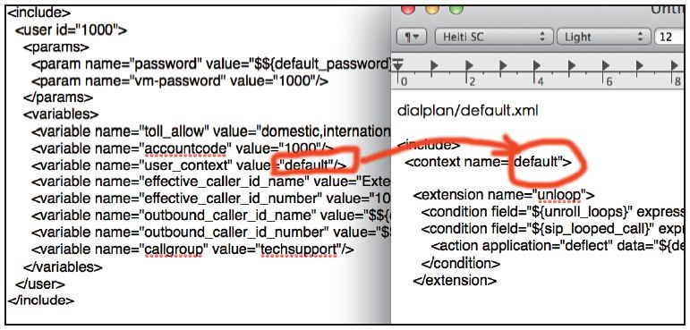

10.5 呼叫是怎样工作的？
本节我们分析一个呼叫在FreeSWITCH里面到底是怎么工作的，若涉及前面的一些基础概念，我们也会简单复习一下，复习不到的请自行翻阅前面的章节。
首先，我们假设你用的是默认的配置，并从1000呼叫1001。我们把1000称为主叫，把1001称为被叫，如图10-9所示。
图10-9 FreeSWITCH中的呼叫流程
1000的SIP话机作为UAC会发送INVITE请求到FreeSWITCH的5060端口（见图10-9中的①），也就是到达mod_sofia的internal这个Profile所配置的UAS（见conf/sip_profiles/internal.xml）。该UAS收到正确的INVITE后会返回100响应码，表示我收到你的请求了，稍等片刻。该UAS中对所有收到的INVITE都要进行鉴权（因为auth-calls=true）。它会先检查ACL（访问控制列表。一般用于IP鉴权，我们暂时还没学到ACL，留到后面去讲）。默认ACL检查是不通过的，因此就会走到密码鉴权阶段，SIP没有发明新的鉴权方式，而是使用与HTTP协议中一样的Digest Auth [1] 进行鉴权。其特点就是密码并不在网络上传输，因而比较安全。读者可以翻到第7章看一下具体的认证流程，一般是UAS回复401，然后UAC重新发送带鉴权信息的INVITE。UAS收到后，便将鉴权信息提交到上层的FreeSWITCH代码，FreeSWITCH就会到Directory（用户目录）中查找相应的用户（见图10-9中的②），在这里它会找到conf/directory/default/1000.xml文件中配置的用户信息，并根据其中配置的密码信息进行鉴权。如果鉴权不通过，则回送403 Forbidden等错误信息，会话结束。
如果鉴权通过，FreeSWITCH就取到了用户的信息，比较重要的是user_context，在我们的例子中它的值为default。接下来电话进入路由（Routing）阶段，开始查找Dialplan（见图10-9中的③）。由于该用户的Context是default，因此路由就从default这个Dialplan查起（由conf/dialplan/default.xml定义）。Context的对应关系如图10-10所示。

图10-10 Context的对应关系
查找Dialplan的流程已经在第6章讲过了，总之它会帮你找到1001这个用户，并执行bridge user/1001。这里，user/1001称为呼叫字符串，它会再次查找Directory，找到conf/directory/default/1001.xml里配置的参数（见图10-9中的④）。由于这里1001是被叫，因此它会进一步查找直到找到1001实际注册的位置。实际上，它实际的注册位置是用dial-string参数来表示的，由于所有用户的规则都一样，因此该参数被放到conf/directory/default.xml中，在该文件中可以看到如下设置：
<param name="dial-string" value="{sip_invite_domain=${dialed_domain},presence_id=${dialed_user}@${dialed_domain}}$
{sofia_contact
(${dialed_user}@${dialed_domain})}"/>
</params>
其中，最关键的是sofia_contact这个API调用，它会查找数据库，找到1001实际注册的Contact地址，并返回真正的呼叫字符串。如在笔者的机器上执行如下命令可以返回1001注册的Contact地址：
freeswitch> sofia_contact 1001@192.168.1.109
sofia/internal/sip:1001@192.168.1.109:51641
找到呼叫字符串后，FreeSWITCH又启动另外一个会话（见图10-9中的⑤）作为一个UAC给1001发送INVITE请求（见图10-9中的⑥），如果1001摘机，则1001向FreeSWITCH回送SIP 200 OK消息，FreeSWITCH再向1000回SIP 200 OK，通话开始。
FreeSWITCH是一个B2BUA，上面的过程建立了一对通话，其中有两个Channel。
参照第7章，读者不妨跟踪SIP消息试一下，在控制台上打开跟踪的命令是：
sofia profile internal siptrace on
关掉调试的命令是：
sofia profile internal siptrace off
在FreeSWITCH的默认配置中，external.xml对应的Profile是不鉴权的，因此凡是送到5080端口的INVITE都不需要鉴权。那么什么情况下或者怎样将INVITE会送到5080呢？有以下两种情况：
·FreeSWITCH作为一个客户端，若要添加一个网关，则该网关会被放到sip_profiles/external/的XML文件中，它就会被包含到sip_profiles/external.xml中。它向其他的服务器注册时，其Contact地址就是IP:5080，如果有来话，对方的服务器就会把INVITE送到它的5080端口（跟上面我们呼叫1001时把INVITE送到51641端口是同样的道理）。
·大部分SIPUA允许你直接把INVITE送到任意一个端口，这一般用在中继方式对接的情况。
读者也可以看到，在external.xml中auth-calls=false。所以，当它收到INVITE时就不会进行鉴权了，而是直接对来话进行路由。
而路由需要一个Context，这个Context从哪里来呢？仔细看一下external.xml，里面有这样一条：
<param name="context" value="public"/>
所以路由就会查找public这个Dialplan，而其中只定义了很少的Extension，也就是说不经过认证的INVITE请求一般只能做比较少的事情，如只处理来话。
读到这里，读者也许会问：我怎么看到internal.xml里的context值也是public呢？
不错，但是internal这个Profile中还有auth-calls=true这一参数。对于一路来话而言，如果经过了认证，就会找到一个用户，然后就会使用我们最前面所说的用户目录中的user_context，而不是使用这个Profile中的context。即用户目录中的user_context比Profile中的context参数优先级要高。
那么，这个Profile中的context什么时候用呢？
前面已经说过我们还没讲到ACL，不过，如果你正确配置了ACL的话，对有些IP地址发来的INVITE请求可以不鉴权，那么自然就不知道是哪个用户打来的电话，因此就无法找到对应的user_context，那就只能使用Profile提供的context了。当然，你可以根据需要把这个context改成任意值，只要你配置了相应的Dialplan进行路由就行了。
值得一提的是，对于没有经过鉴权的呼叫，同样可以有主、被叫号码，只不过主叫号码是不可信的，对方可以指定显示任意号码。如果你讲究严谨的话，就需要多做些工作了，如使用我们10.4.13节说的effective_caller_id_number强制设置显示某些主叫号码等。
[1] http://en.wikipedia.org/wiki/Digest_access_authentication。